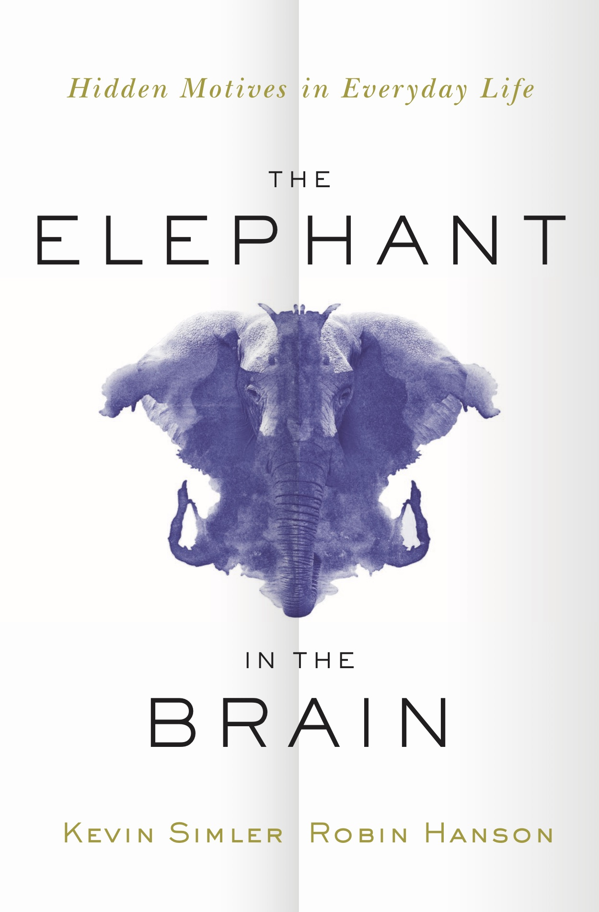

Now available in hardcover, ebook, and audiobook formats.
Order from Audible,
Amazon, BN, Google, Target.
Published by Oxford University Press

Human beings are primates, and primates are political animals. Our brains are therefore designed not just to hunt and gather, but also to get ahead socially, often by devious means.
But while we may be self-interested schemers, we benefit by pretending otherwise. The less we know about our own ugly motives, the better. And thus we don’t like to talk — or even think — about the extent of our selfishness. This is “the elephant in the brain,” an introspective blind spot that makes it hard to think clearly about ourselves and the explanations for our behavior.
The aim of this book is to confront our hidden motives directly — to track down the darker, unexamined corners of our psyches and blast them with floodlights. Then, once our minds are more clearly visible, we can work to better understand human nature: Why do people laugh? Why are artists sexy? Why do we brag about travel? Why do we prefer to speak rather than listen?
Beyond our personal lives, unconscious motives also lurk within large-scale social institutions such as art, charity, education, politics, and religion. In fact, these venerated institutions are in many ways designed to accommodate our hidden motives, to serve covert agendas alongside their “official” ones. The existence of big hidden motives can upend the usual political debates and cast fatal doubt on many polite fictions. You won’t see yourself — or the world — the same after confronting the elephant in the brain.
A more detailed outline is also available.
You can find us on: